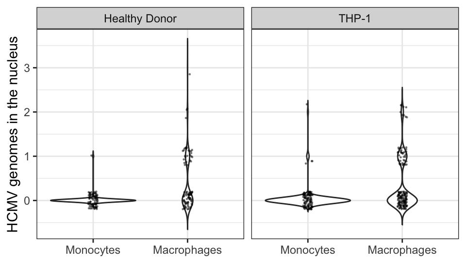
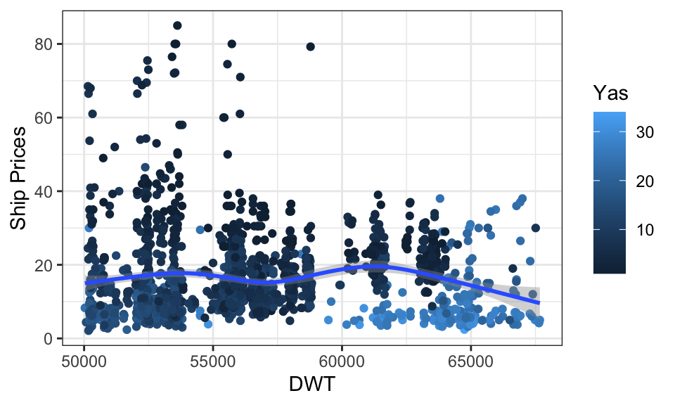

Lab Five-Six – Data Wrangling in R
Tips
- Complete the tasks below. Make sure to start your solutions in on a new line that starts with “Solution:”.
- Make sure to use the Quarto Cheatsheet. This will make completing and writing up the lab much easier.
- Make sure to use “enter” to make your code readable, so it doesn’t run off the page. I switched the Quarto document to automatically render to .pdf, so you can see what you’re submitting by default. You can switch back for the highlighting by moving the html block above the pdf block in the YAML header.
- Use the pipe operator (
|>). It makes the data wrangling tasks much easier to write. - Use
head(...)orglimpse(...)often to ensure your code did what you wanted it to and that you haven’t accidentally deleted their entire dataset with a bad filter. - Don’t forget that you can copy-and-paste code when you’re doing something similar as we did in class!
Timeline
- Week of 2/16: Aim to complete the data wrangling sections
- Week of 2/23: Aim to complete the data summaries sections
1 Biomedical Science Data
Kitsberg et al. (2025) collect data on the Human Cytomegalovirus (HCMV). HCMV is a member of the herpesvirus family – the same family that includes: chickenpox, mononucleosis (mono), and cold sores. Prevalence is high with a worldwide seroprevalence of 24% to 100% (Gupta and Shorman 2025). The virus persists in a dormant state for the entire life of those infected. Primary cytomegalovirus infection is often asymptomatic but can present with flu-like symptoms. The infection can reactivate due to stress, aging, or a weakened immune system.
The researchers obtained blood samples from healthy donors, males and females, aged 25-45. They infected the cells of primary (human donor’s blood) or THP1 (purchased cell lines) monocytes (\(n = 87\) and \(n = 112\), respectively) and macrophages (\(n = 93\) and \(n = 170\), respectively) and counted the number of viral genomes in the nuclei.
Note that the original donor of the THP-1 cell line was a 1-year-old Japanese boy. He was treated for Acute Monocytic Leukemia at Tohoku Hospital Pediatrics (THP-1; the first cell line there). Because they are malignant cancer cells, they can divide indefinitely, breaking the usual cell managment that usually reigns in rogue cells. Therefore, these cells can divide indefinitely in a lab environment. THP-1 cells, and those like them, serve as such a reliable, uniform model for medical research and improve reproducability.
Preliminary Question: Are THP-1 cells a good stand-in for human cells?
Research Question: Is the virus more prevalent in the nucleus of monocytes or macrophages, explaining why HCMV stays dormant in monocytes but goes active in macrophages?
1.1 Data Wrangling
1.1.1 Part A
Go to the website and download the source data https://www.nature.com/articles/s41467-025-68063-y#Sec30.
Describe the process – do not leave out any steps – for how you can load the data for Figure 3b from the manuscript into R.
Hint: You can use packages like readxl (Wickham and Bryan 2025) but you will find it substantially easier to open the .xls file using your computer’s spreadsheet software and create a new .csv file with the data you need.
Solution
1.1.2 Part B
The data need to be cleaned. Note that the sample type (Healthy Donor or THP-1), cell type (Monocytes or Macrophages), and treatment (12 Hours Post-Infection or Uninfected) are all recorded in one column sample, separated with underscores. Use separate(...) from the tidyverse package to separate the sample column into the SampleType, CellType, Treatment columns. Save the object as dat.kitsberg.cleaned.
Hint: Use ?separate(...) to see how it works.
Solution
1.1.3 Part C
The researchers are only interested in observations in the treatment group (12hpi). Remove uninfected samples from the data. Update dat.kitsberg.cleaned with the result.
Hint: I would use the filter(...) function.
Solution
1.1.4 Part D
When CellType is “MDM”, it is a Monocyte-Derived Macrophages. That is, the cell type should be macrophages which is coded as “mac”. Update dat.kitsberg.cleaned with the result.
Hint: I would use the mutate(...) function. You will likely find if_else(...) or case_when(...) helpful.
Solution
1.2 Part E
The researchers are only interested in monocytes and macrophages. Remove any other cell types. Update dat.kitsberg.cleaned with the result.
Hint: I would use the filter(...) function.
Solution
1.3 Part F
Clean up the data entry. Replace the shorthand the researchers used with the neat sample type (Healthy Donor or THP-1), cell type (Monocytes or Macrophages), and treatment (12 Hours Post-Infection or Uninfected). Update dat.kitsberg.cleaned with the result.
Hint: I would use the mutate(...) function. You will likely find if_else(...) or case_when(...) helpful.
Solution
Code
dat.kitsberg.cleaned <- dat.kitsberg.cleaned |>
mutate(SampleType = case_when(SampleType == "primary" ~ "Healthy Donor",
SampleType == "THP1" ~ "THP-1")) |>
mutate(CellType = case_when(CellType == "mono" ~ "Monocytes",
CellType == "mac" ~ "Macrophages")) |>
mutate(Treatment = case_when(Treatment == "uninfected" ~ "Uninfected",
Treatment == "12hpi" ~ "12 Hours Post-Infection")) 1.4 Part G
In an R code block, combine your answers into one code block that completes the full cleaning process. Save the object as dat.kitsberg.cleaned.
Note: You will use this in the next section
Solution
Code
dat.kitsberg <- read.csv(file = "data.kitsberg.csv")
dat.kitsberg.cleaned <- dat.kitsberg |>
separate("sample", c("SampleType", "CellType", "Treatment"), sep = "_") |>
filter(Treatment == "12hpi") |>
mutate(CellType = case_when(CellType == "MDM" ~ "mac", TRUE ~ CellType)) |>
filter(CellType %in% c('mono', 'mac')) |>
mutate(SampleType = case_when(SampleType == "primary" ~ "Healthy Donor",
SampleType == "THP1" ~ "THP-1")) |>
mutate(CellType = case_when(CellType == "mono" ~ "Monocytes",
CellType == "mac" ~ "Macrophages")) |>
mutate(Treatment = case_when(Treatment == "uninfected" ~ "Uninfected",
Treatment == "12hpi" ~ "12 Hours Post-Infection")) 1.5 Data Summaries
1.5.1 Part A
Recreate Figure 3b as depicted in the paper (see https://www.nature.com/articles/s41467-025-68063-y#Fig3). You can ignore the significance comparison because we haven’t done that yet.
Hint: I would use geom_violin(...) for Figure 3b I also expect your plots to look nicer – better labels, better scaling, etc. Don’t forget to use the proper formatting using the syntax in the Quarto cheatsheet.
Solution
Code
ggplot(dat.kitsberg.cleaned) +
geom_violin(aes(x = factor(CellType,
levels = c("Monocytes", "Macrophages")),
y = viruses.within.nucleus),
trim = FALSE,
adjust = 0.8)+
geom_jitter(aes(x = factor(CellType, levels = c("Monocytes", "Macrophages")),
y = viruses.within.nucleus),
width = 0.05,height = 0.2,
alpha = 0.4,size = 0.2) +
theme_bw() +
labs(x = "",
y = "HCMV genomes in the nucleus") +
facet_wrap(~SampleType)
1.5.2 Part B
Compute a table containing relevant numerical summaries for Figure 3b.
Hint: I would use group_by(...) and summarize(...) to complete this. Don’t forget to use the proper formatting using knitr::kable(...) as described in the Quarto Cheatsheet.
Solution
Code
dat.kitsberg.summary <- dat.kitsberg.cleaned |>
group_by(SampleType, CellType) |>
summarize(
Mean = mean(viruses.within.nucleus),
SD = sd(viruses.within.nucleus),
Median = median(viruses.within.nucleus),
IQR = IQR(viruses.within.nucleus),
Skewness = e1071::skewness(viruses.within.nucleus),
Kurtosis = e1071::kurtosis(viruses.within.nucleus)
)| SampleType | CellType | Mean | SD | Median | IQR | Skewness | Kurtosis |
|---|---|---|---|---|---|---|---|
| Healthy Donor | Macrophages | 0.37 | 0.60 | 0 | 1 | 1.69 | 3.04 |
| Healthy Donor | Monocytes | 0.01 | 0.11 | 0 | 0 | 9.01 | 80.07 |
| THP-1 | Macrophages | 0.33 | 0.57 | 0 | 1 | 1.53 | 1.31 |
| THP-1 | Monocytes | 0.04 | 0.25 | 0 | 0 | 5.97 | 38.00 |
The result suggests that the mean of virus in macrophages is higher than the mean of monocytes, and macrophages also has higher variation. This suggests virus is more prevalent in the nucleus of macrophages. The THP-1 cell has roughly similar mean compare to the healthy donors regarding both macrophages and monocytes, suggesting THP-1 cells is a good stand-in for human cells.
2 Ship Valuation
Bal et al. (2025) aim to build a model for predicting the value of Supramax and Ultramax ships using both current and past market data. Their goal was to build a model that only uses information anyone can easily look up.
The researchers collected 17 years of real ship sale prices (2005–2022), covering \(n=1819\) Supramax and Ultramax ship sales.
Research Question: Can we predict Supramax and Ultramax ship prices?
2.1 Data Wrangling
2.1.1 Part A
I downloaded the data from linked in the article (https://journals.plos.org/plosone/article?id=10.1371/journal.pone.0319073). I have included the data in this lab folder as ShipValuation-Bal25.csv. Load the data into R.
Solution
2.1.2 Part B
The price of each Supramax and Ultramax ship is reported on the \(\log_{10}\) scale. Create a new column called price that contains the price in millions of dollars. \[\text{Price} = \frac{10^{\text{SPLog}}}{1000000}\] Save the object as dat.bal.cleaned.
Hint: I would use the mutate(...) function.
2.1.3 Part C
The authors recorded the country that each Supramax or Ultramax ship was built in in the columns Japan, China, People's Republic Of, Philippines, Korea, South, Others Country Build. These columns are marked 1 to indicate that is the country of origin and 0 otherwise. Create a new column called OriginCountry that contains a clean labels for the country in which the ship was built. Update dat.bal.cleaned with the result.
Hint: I would use the mutate(...) function. You will likely find if_else(...) or case_when(...) helpful.
Solution
Code
dat.bal.cleaned <- dat.bal.cleaned |>
mutate(OriginCountry = case_when(Japan == 1 ~ "Japan",
China..People.s.Republic.Of == 1 ~ "People's Republic Of China",
Philippines == 1 ~ "Philippines",
Korea..South == 1 ~ "Korea, South",
Others.Country.Build == 1 ~ "Others Country Build",
TRUE ~ NA_character_
))2.1.4 Part D
The authors recorded each Supramax and Ultramax ship’s main engine manufacturer in the columns Caterpillar, MAN-B&W, Wartsila, Mitsubishi. These columns are marked 1 to indicate that is the manufacturer and 0 otherwise. Create a new column called Manufacturer that contains a clean labels for the manufacturer. Update dat.bal.cleaned with the result.
Hint: Follow the logic of the previous question.
Solution
2.1.5 Part E
The researchers recorded whether each Supramax and Ultramax ship is currently covered by a Protection and Indemnity (P&I) Club. This can be an indicator that a ship meets the minimum seaworthiness and safety requirements of the insurer.
The authors recorded P&I clubs in the columns Japan P&I Club, Gard, West of England, North of England, UK P&I, Britannia P&I, London P&I Club, Skuld, Steamship Mutual, Others, Unknown. These columns are marked 1 to indicate that the ship is insured by that P&I club and 0 otherwise. Create a new column called PI.club that contains a clean labels for the P&I club. Update dat.bal.cleaned with the result.
Hint: Follow the logic of the previous questions.
Solution
Code
dat.bal.cleaned <- dat.bal.cleaned |>
mutate(PI.club = case_when(Japan.P.I.Club == 1 ~ "Japan P&I Club",
Gard == 1 ~ "Gard",
West.of.England == 1 ~ "West of England",
North.of.England == 1 ~ "North of England",
UK.P.I == 1 ~ "UK P&I",
Britannia.P.I == 1 ~ "Britannia P&I",
London.P.I.Club == 1 ~ "London P&I Club",
Skuld == 1 ~ "Skuld",
Steamship.Mutual == 1 ~ "Steamship Mutual",
Others == 1 ~ "Others",
Unknown == 1 ~ "Unknown",
TRUE ~ NA_character_
))2.1.6 Part F
The researchers recorded whether each Supramax and Ultramax ship is classed by a society that requires a ship to be safe, structurally sound, and built/maintained to specific engineering standards.
The authors recorded class society in the columns Nippon Kaiji Kyokai (IACS), Lloyd's Register, Bureau Veritas (IACS), Det Norske Veritas (IACS), American Bureau of Shipping (IACS), Others Class, With Two Classes, Disclassed. These columns are marked 1 to indicate that the ship is classed by that soceity and 0 otherwise. Create a new column called Class that contains a clean labels for the class. Update dat.bal.cleaned with the result.
Hint: Follow the logic of the previous questions.
Solution
Code
dat.bal.cleaned <- dat.bal.cleaned |>
mutate(Class = case_when(Nippon.Kaiji.Kyokai..IACS. == 1 ~ "Nippon Kaiji Kyokai (IACS)",
Lloyd.s.Register == 1 ~ "Lloyd's Register",
Bureau.Veritas..IACS. == 1 ~ "Bureau Veritas (IACS)",
Det.Norske.Veritas..IACS. == 1 ~ "Det Norske Veritas (IACS)",
American.Bureau.of.Shipping..IACS. == 1 ~ "American Bureau of Shipping (IACS)",
Others.Class == 1 ~ "Others Class",
With.Two.Classes == 1 ~ "With Two Classes",
Disclassed == 1 ~ "Disclassed",
TRUE ~ NA_character_
))2.1.7 Part G
The researchers recorded the flag state of each Supramax and Ultramax ship. Each flag state enforces its own set of safety, environmental, and crew welfare rules and regulations. Ships under certain flag states may be more or less valuable depending on how much the flag affects the buyer’s trust in the condition of the boat.
The authors recorded flag states in the columns Panama, Marshall Islands, Liberia, Malta, Hong Kong, China, Singapore, Others Flag, With two flags. These columns are marked 1 to indicate that the ship has that flag state and 0 otherwise. Create a new column called FlagState that contains a clean labels for the flag state. Update dat.bal.cleaned with the result.
Hint: Follow the logic of the previous questions.
Solution
Code
dat.bal.cleaned <- dat.bal.cleaned |>
mutate(FlagState = case_when(Panama == 1 ~ "Panama",
Marshall.Islands == 1 ~ "Marshall Islands",
Liberia == 1 ~ "Liberia",
Malta == 1 ~ "Malta",
Hong.Kong..China == 1 ~ "Hong Kong",
Singapore == 1 ~ "Singapore",
Others.Flag == 1 ~ "Others Flag",
With.two.flags == 1 ~ "With two flags",
TRUE ~ NA_character_
))2.2 Part H
In an R code block, combine your answers into one code block that completes the full cleaning process. Save the object as dat.bal.cleaned.
Note: You will use this in the next section
Solution
Code
dat.bal.cleaned <- dat.bal |>
mutate(price = (10 ^ SPLog) /1000000) |>
mutate(OriginCountry = case_when(Japan == 1 ~ "Japan",
China..People.s.Republic.Of == 1 ~ "China, People's Republic Of",
Philippines == 1 ~ "Philippines",
Korea..South == 1 ~ "Korea, South",
Others.Country.Build == 1 ~ "Others Country Build",
TRUE ~ NA_character_
)) |>
mutate(Manufacturer = case_when(Caterpillar == 1 ~ "Caterpillar",
MAN.B.W == 1 ~ "MAN-B&W",
Wartsila == 1 ~ "Wartsila",
Mitsubishi == 1 ~ "Mitsubishi",
TRUE ~ NA_character_
)) |>
mutate(PI.club = case_when(Japan.P.I.Club == 1 ~ "Japan P&I Club",
Gard == 1 ~ "Gard",
West.of.England == 1 ~ "West of England",
North.of.England == 1 ~ "North of England",
UK.P.I == 1 ~ "UK P&I",
Britannia.P.I == 1 ~ "Britannia P&I",
London.P.I.Club == 1 ~ "London P&I Club",
Skuld == 1 ~ "Skuld",
Steamship.Mutual == 1 ~ "Steamship Mutual",
Others == 1 ~ "Others",
Unknown == 1 ~ "Unknown",
TRUE ~ NA_character_
)) |>
mutate(Class = case_when(Nippon.Kaiji.Kyokai..IACS. == 1 ~ "Nippon Kaiji Kyokai (IACS)",
Lloyd.s.Register == 1 ~ "Lloyd's Register",
Bureau.Veritas..IACS. == 1 ~ "Bureau Veritas (IACS)",
Det.Norske.Veritas..IACS. == 1 ~ "Det Norske Veritas (IACS)",
American.Bureau.of.Shipping..IACS. == 1 ~ "American Bureau of Shipping (IACS)",
Others.Class == 1 ~ "Others Class",
With.Two.Classes == 1 ~ "With Two Classes",
Disclassed == 1 ~ "Disclassed",
TRUE ~ NA_character_
)) |>
mutate(FlagState = case_when(Panama == 1 ~ "Panama",
Marshall.Islands == 1 ~ "Marshall Islands",
Liberia == 1 ~ "Liberia",
Malta == 1 ~ "Malta",
Hong.Kong..China == 1 ~ "Hong Kong",
Singapore == 1 ~ "Singapore",
Others.Flag == 1 ~ "Others Flag",
With.two.flags == 1 ~ "With two flags",
TRUE ~ NA_character_
)) |>
drop_na(price)2.3 Data Summaries
First, I provide a short description of the other variables in their data. Note that the size ordering of types of ships discussed below is:
\[\text{Handysize} < \text{Supramax} < \text{Ultramax} < \text{Panamax} < \text{Capesize}\]
DWT: The deadweight tonnage, which is the maximum weight each Supramax and Ultramax ship can safely carry in metric tons. This gives a measure of how much cargo, fuel, fresh water, ballast water, provisions, and crew a ship can handle.Yas: The age in years. New Supramax and Ultramax ships were recorded as having age 1.Enginges RPM: Revolutions per minute of each Supramax and Ultramax ship’s main propulsion engine. Generally speaking, lower-RPM engines are more expensive because they are more fuel efficient.BACI: The Baltic Capesize Index. This describes freight rates for Capesize dry bulk ships, which reflects supply and demand. When BACI is high, Capesize ships are more profitable in shipping, which could positively affect Supramax and Ultramax ship values as demand for dry bulk commodities might be high and large shipments could be split into several Supramax and Ultramax shipments.
Note: This reports the current BACI. The data also contain the BACI form 1, 2, and 3 months before the sale (BACI-1,BACI-2,BACI-3).BPNI: The Baltic Panamax Index. This describes the cost to ship dry bulk commodities (e.g., coal or grain) on Panamax class ships. When BPNI is high, we expect Panamax ship prices to go up. Supramax and Ultramax ship values tend to follow this trend as charterers switch to these smaller vessels when Panamax rates become too expensive.
Note: This reports the current BPNI. The data also contain the BPNI form 1, 2, and 3 months before the sale (BPNI-1,BPNI-2,BPNI-3).BSIS: The Baltic Supramax Index. This describes freight rates for Supramax vessels, which reflects supply and demand. When BSIS is high, Supramax and Ultramax prices are usually higher because they are more profitable in shipping.
Note: This reports the current BSIS. The data also contain the BSIS form 1, 2, and 3 months before the sale (BSIS-1,BSIS-2,BSIS-3).BHSI: The Baltic Handysize Index. This describes freight rates for handysize vessels. When BHSI is high, Supramax and Ultramax ship prices are usually higher because the prices move together.
Note: This reports the current BHSI. The data also contain the BHSI form 1, 2, and 3 months before the sale (BHSI-1,BHSI-2,BHSI-3).LIBOR: The London InterBank Offered Rate. This describes the average reported interest rate at which banks would lend US dollars for 3 months.
2.3.1 Part A
Choose a categorical variable. Create a plot and corresponding numerical summary to assess whether or how ship prices vary across the levels of the selected categorical variable.
Solution
| Manufacturer | Mean | SD | Median | IQR | Skewness | Kurtosis |
|---|---|---|---|---|---|---|
| Caterpillar | 5.05 | 2.05 | 5.05 | 1.45 | 0.00 | -2.75 |
| MAN-B&W | 16.88 | 11.07 | 14.50 | 11.95 | 2.20 | 7.62 |
| Mitsubishi | 12.35 | 6.72 | 10.85 | 8.40 | 1.04 | 0.39 |
| Wartsila | 14.31 | 11.60 | 9.73 | 15.05 | 1.72 | 4.06 |
Code

The table shows that there is a notable difference in price level between different manufacturer. MAN-B&W has the highest average price, and Caterpillar has the lowest price. In addition, MAN-B&W and Wartsila, which have relative high average price, also have higher standard deviation.
2.3.2 Part B
Choose a quantitative variable. Create a plot and corresponding numerical summary to assess whether or how ship prices vary with the selected quantitative variable.
Solution
| Pearson | Spearman | Kendall |
|---|---|---|
| -0.02 | 0.09 | 0.07 |
Code

The table and plot shows that the correlation coefficient between DWT and ship prices is small, suggesting the relationship is weak. However, it could be caused by other factors such as the age of the ship. For example, some new ships with lower DWT may have higher price, while some old ships with higher DWT may have lower price.